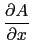
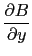
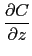

suivant: Le rotationnel : curl
monter: Les expressions de plusieurs
précédent: La matrice hessienne :
Table des matières
Index
La divergence : divergence
divergence a deux paramètres : une expression F dependant de
n variables rèelles et un vecteur de dimension
n indiquant le nom de ces variables.
On a si n = 3 :
divergence([A,B,C],[x,y,z])=
 +  + 
On tape :
divergence([x*z,-y^2,2*x^y],[x,y,z])
On obtient :
z+-2*y
Documentation de giac écrite par Renée De Graeve